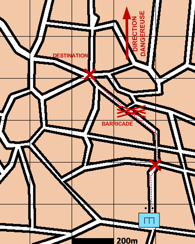

NIVEAU : Pion
ARME : GENIE
MISSION : Ouvrir Itineraire
NIVEAU : Pion
ARME : GENIE
MISSION : Ouvrir Itineraire
Schéma de modélisationOuvrir itinéraire |
Paramètres obligatoiresItineraireItineraire à parcourir |
|
Paramètres optionnelsDirection DangereuseLignes de coordination [LC] Limite gauche / limite droite Lignes de début et fin de mission [LDM/LFM] |
||
 |
Fiches missions |  |